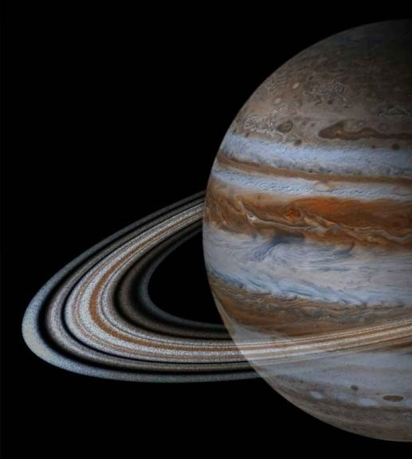
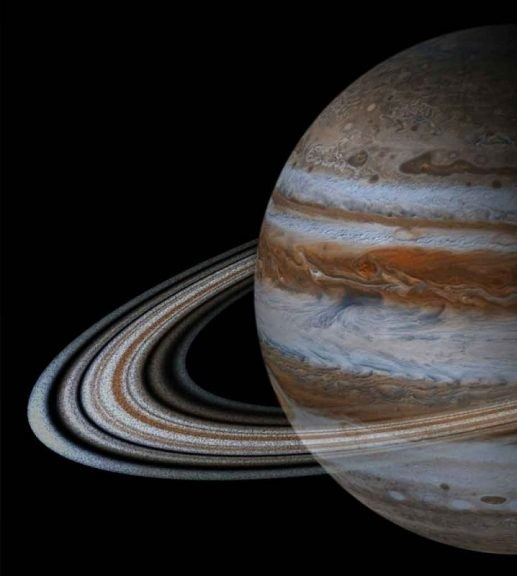

Юпітер — найпотужніше (після Сонця) радіоджерело Сонячної системи в дециметровому — метровому діапазонах довжин хвиль. Радіовипромінювання має спорадичний характер і в максимумі сплеску досягає 106 янських.
Під час великих протистоянь (одне з яких відбувалося у вересні 2010) Юпітер видно неозброєним оком як один із найяскравіших об'єктів на нічному небі (після Місяця й Венери). Диск і супутники Юпітера — популярні об'єкти для спостереження астрономів-аматорів, які зробили низку відкриттів (наприклад, комети Шумейкера — Леві, одна з яких зіткнулася з Юпітером 1994 року, чи зникнення Південного екваторіального поясу Юпітера 2010).
Поки що не можна з упевненістю сказати, які процеси відбуваються в атмосфері Юпітера й наскільки сильно вони впливають на хімічний склад — як у внутрішніх областях, так і в зовнішніх шарах. Це створює певні труднощі детальної інтерпретації спектра. Проте вважається, що всі процеси, здатні так чи інакше впливати на велику кількість елементів, є локальним й досить обмеженими, отже, вони не здатні глобально змінити розподіл речовини.
Коротко про найбільшу планету сонячної системи
Юпітер
 

Юпітер більш ніж удвічі масивніший за всі інші планети разом узяті; він майже в 318 разів масивніший за Землю. Однак маса Юпітера недостатня , аби перетворитися на зорю, подібну до Сонця: для цього його маса мала б бути ще в 70—80 разів більшою. Тим не менш у надрах Юпітера відбуваються процеси з досить потужною енергетикою: теплове випромінювання планети, еквівалентне 4·1017 Вт, що приблизно вдвічі перевищує енергію, яку ця планета отримує від Сонця. Вірогідним джерелом такої енергії є гравітаційне стиснення.
Всього в Юпітера аж 95 супутників. Розглянемо супутники Основної групи. До неї належать:
- Супутник Іо
- Супутник Європа
- Супутник Ганімед
- Супутник Каллісто